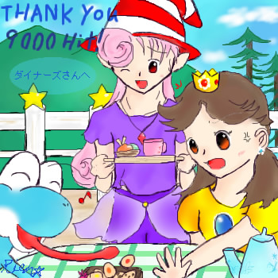

THANK YOU ９０００HIT！ ダイナーズ様へ
|  |
山と空の見えるテラスで、楽しいティータイムのひと時を♪
「二人とも、カップとアイスクリーム持ってきたよー･･って･･」
「ちょっとヨッシーッ！それ、私が狙ってたオレンジビーンズクッキーよ！？
あーっ、ストロベリーの方にも手出したわね！」
「えへへー、こういうのは早いもの勝ちですよｖ」
「よくも私の･･っ、こうなったらビビアンの持ってきてくれたアイスは私が全部いただくわ！！」
（びっ、とビビアンを指差しながら。）
「なっ･･！？そ、それはあんまりですごめんなさいぃい･･っ！」
「（･･･人選間違えちゃったかなぁ･･；）」
な、なんか妙なシュツエーションにしてしまって申し訳ありませんorz
えっと。改めまして･･、ダイナーズ様からのリクエスト、
「ティータイム中のヨッシー、デイジー、ビビアン（擬人化）です。
い、いつもの事ながら劣化がっ；
私の中でデイジーはおてんば姫のイメージがあったので、
なんだか優雅なティータイムになるものかどうか怪しいなあ･･なんて失礼な事を考えて（笑
結局、ちょっとあたふたした感じのティータイムとなりました。
また･･、デイジー姫とはあまり関わった事がなく、しかも資料を無くし；
記憶と僅かな資料を頼りに描き上げたので（滝汗
おそらく、どこかしら原型と違う所があるかと思います･･＾＾；
ご、ごめんなさいorz
久しぶりにしぃペインターで製作したので、色々いじりながら描いてみました。
楽しい雰囲気のイラストだったので、描くのもとても楽しかったですｖ
リクエスト、ありがとうございました！
ダイナーズ様のみ、保存、転載可能です。